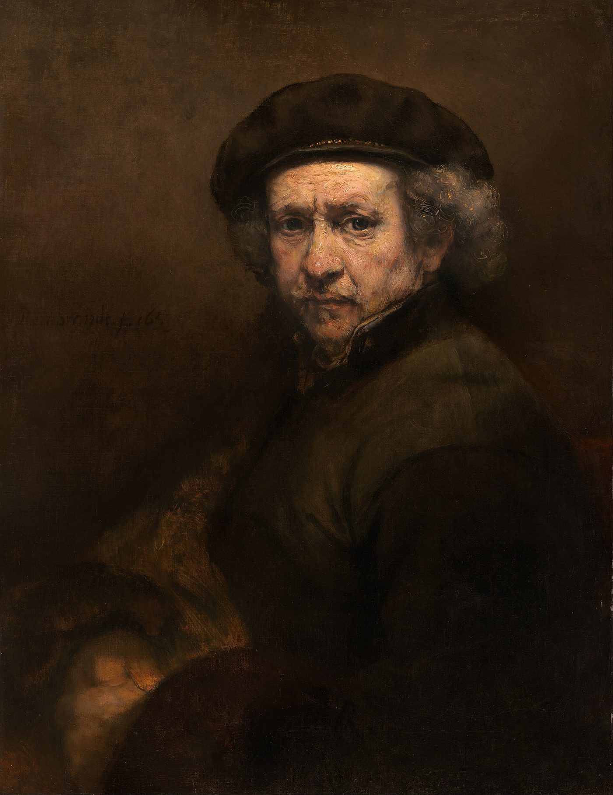

ego death / loss of identity
エゴデス
鏡の顔が自分に見えず、何を選ぶにも迷う。エゴの死として語られる「自分が誰か分からない」感覚を、ある教師の鏡の体験やネルソン・マンデラの歩み、精神科医スタニスラフ・グロフと心理学者エリク・エリクソンの記述を引きながら、症状、象徴的な死との区別、過ごし方まで整理します。

鏡に映る顔が、自分のものではないように感じる。好きだった音楽や仕事からも少しずつ遠ざかり、何を着るかさえ決めにくい――自分が誰か分からなくなる感覚は、静かでありながら切実です。
この分野では、この状態を古い自己の輪郭がほどけ、新しいあり方へ移る途中の出来事として語ることがあります。ここでは、そこで用いられる説明と症状、過ごし方をたどり、心理学と精神医学にある「エゴの死」「アイデンティティの危機」「象徴的な死」という見方も並べます。
自分が誰か分からなくなるとき
この経験を説明する場面では、ネルソン・マンデラの歩みが引かれることがあります。1964年に投獄されたとき、彼は武装闘争を主張する革命家だったとされます。27年の獄中を経て釈放されたあと、妻を含む周囲が報復を望むなかで、和解を選んだと語られています。
「マンデラの物語は、あなたの人生と何の関係もないように見えるかもしれません。でも、ひとつだけ同じことがある。人生のどこかで、古い自分とその同一性が死に、新しい自分が生まれる。そのあいだ、自分が誰なのかまったく分からなくなる」
ある教師は、鏡の前で立ち止まった体験を、自身の変化の始まりとして話しています。
「2014年のことです。家事をしていて、鏡の前を通りかかり、横目で自分の姿が見えた。立ち止まって、振り返って、鏡に近づいて、じっと見た。映っている顔が、自分だと分からなかった。何十年も同じ顔を見てきたのに、突然、分からない。その小さな瞬間が、私の人生を変えました。そして、これは形は違っても、誰にでも起きます」
エゴの死はなぜ起きるとされるか
この分野では、自分の感覚が揺らぐ過程を、魂、エゴ、第三チャクラという三つの言葉で説明しています。
1．魂が「出現」のスイッチを入れる
「魂は、体のなかにいると同時に、外にもいて、人間の自分には見えない高い視点から見ています。人間の側には予測できない時期に、魂はスイッチを入れる。これは出現の出来事と呼ばれます。スイッチが入ると、魂は人間の体に高い周波数のエネルギーを送り、あなたを定義し直す変化が連鎖して始まる」
2．エゴの死
「エゴとは、『私』という感覚を作っている頭の部分です。『私』と言うとき、話しているのはエゴ。世界のなかの自分の場所を理解させ、人格全体を、他と区別された自分を、作り上げる。神経科学の側から見ると、エゴは脳のどこか一か所にあるのではなく、脳のあちこちに広がる神経のネットワークの集まり——とくに、複雑な決定と社会的なふるまいと人格を受け持つ前頭前野——が協力して作っている。魂が高い周波数を送ると、この古い自己を作っていたネットワークが崩れる。この分野ではそれをエゴの死と呼びます。自己の感覚が溶ける。鏡の顔が分からなくなるのは、そのためです」
3．第三チャクラが空になる
「みぞおちのチャクラは、個人の力、意志、主権、自己の感覚を受け持ちます。決めて、確信して、動く中心でもある。エゴが最初に生まれる場所でもある——思春期に大きく育ちます。魂のエネルギーがここに入ると、チャクラは開いて中身をこぼし、エネルギーとしては空になる。エゴのネットワークの崩壊と、第三チャクラが空になること。この二つが合わさって、自分が誰か分からなくなる」
この説明には、「よい知らせ」として、変化の途中にいる期間についての言葉も添えられています。
「これは一時的です。魂は、あなたが一生、自分を持たずに過ごすためにスイッチを入れたのではない。過去の自分を手放して、もっと大きな自分に開くためです。自分が誰か分からない時期にいるということは、魂と頭と体が、広がった自分のために準備をしている、ということ。ただ、古い同一性が消えて新しいものが現れるまでの、あいだの場所は、とてもつらい」
自分が分からない時期の症状
ここで挙げられる症状は、暮らしの小さな場面から、周囲との関係、死を思わせる感覚まで幅があります。
1．自信のなさ
「古い自分がもう存在しないのに、新しい自分はまだ来ていない。第三チャクラが空で、頭は考えの混乱。決められない。好きだった服が、突然嫌いになる。今日どの服を着るかという簡単な選択で、つまずく」
2．恐れ
「自信のなさから、恐れが来る。第三チャクラが空になると、オーラも一時的に縮む。縮んだエネルギーが恐れを生み、恐れがエネルギーを縮める。この悪循環は、チャクラが満たされはじめると消えていく」
3．気が狂ったような感じ
「まわりの人が、それを増幅します。『前のあなたが恋しい』『もう分からない』『精神科に行ったら』。その裁きが、正気をさらに疑わせる」
4．死と向き合うこと
「エゴが崩れ、第三チャクラが空になると、それは死のように感じられます。もちろん、象徴的な死で、実際に死ぬのではない」
5．影響されやすくなる
「自分が分からないあいだは、意見の強い友人や、自己愛の強い上司の影響を受けやすくなる。まわりの人は、そのエネルギーの弱さを感じ取って、なおさら自分の意見を押しつけてくる。この時期の親友は、『いいえ』という言葉です。いいえは、それだけで完全な文です。弱っていても、いいえは言えます」
6．懐かしさ
「崩れていくエゴが、支配を取り戻そうとして使う古典的な手です。『前の自分のほうがよかった。前の人生のほうが安全だった。戻ったほうがいい』。『時間を戻したい』という便りをたくさん受け取ります。それは、崩れかけたエゴのずるい声で、本当ではありません。現れようとしている新しいあなたは、もっと大きなあなたです。より丸ごとで、より喜びがある。戻る理由がどこにあるでしょう」
エゴの死の時期に語られる過ごし方
この分野では、急いで元の自分へ戻そうとするよりも、移り変わる感情と距離を取ることが語られます。
1．抵抗しない
「エゴが死んでいくことにも、第三チャクラが空になることにも、抵抗しない。そのあいだに来る感情——古い自分への悲しみ、何をすればいいか分からない混乱、宇宙に見捨てられたという怒り——にも。どれも、そこにあることを許す。ただ、しがみつかない。ガイドがくれた私のいちばん好きな言葉です。裁かずに、観る。感じ、考えを、体のなかで巡らせて、観て、つかまない」
2．隠遁して、それから動く
「外の世界から引くこと。何千年も、この道の人たちがしてきたことです。自分の泡のなかで、誰にも邪魔されずに、新しい自分と知り合う。マンデラの変化は、27年の獄中——しかも独房に何度も入れられた時間——で起きました。目覚めの最初に何年も、独りで沈黙のなかで暮らす人もいます。でも、社会を離れることは、大多数の人には無理です。だから、小さく隠遁する。週末を自然のなかでひとりで過ごす。一日、ひとりで車を走らせる。家で二時間、瞑想と日記のために鍵をかける。数分でもいい。ひとりの時間は、古い自分から新しい自分へ移るために、絶対に要ります。言い訳して先送りしないこと」
心理学でいうエゴの死とアイデンティティの危機
「エゴの死」という言葉は、この分野だけのものではありません。心理学、精神医学、神話、宗教的伝統にも、自己の感覚が大きく変わる経験を表す言葉があります。
エゴの死
英語版ウィキペディアの項目は、これを「主観的な自己同一性の完全な喪失」と定義しています。19世紀の心理学者ウィリアム・ジェームズは同じものを「自己の明け渡し」と呼び、ユング心理学は「心的な死」——心の根本的な変容——と呼びました。
神話学者ジョーゼフ・キャンベルの「英雄の旅」では、エゴの死は三段階（分離・移行・統合）の二番目、自己を明け渡す段階で、そのあと英雄は発見を携えて世界へ戻るとされています。スーフィーはこれを「ファナー（消滅）」と呼び、中世のユダヤ神秘主義は「死の口づけ」と呼びました。
1960年代には、ティモシー・リアリーらがLSDの体験の第一段階を「エゴの死」と呼びました——「言葉を超え、時空を超え、自己を超えた完全な超越。幻もなく、自己の感覚もなく、思考もない」。
精神科医スタニスラフ・グロフ（1988年）は、次のように定義しています。「完全な消滅の感覚。この経験は、その人の人生のそれまでの参照点すべてが、瞬時に、容赦なく破壊されることを伴うようだ」。
グロフはプラハ生まれの精神科医で、トランスパーソナル心理学の創始者のひとりとされています。妻クリスティーナとの共著『自己の嵐の探求』（1990年）では、死と再生の循環についてこう述べています。
「それはしばしば、強力な死と再生の循環の一部であり、実際に死んでいるのは、その人の成長を妨げていた古いあり方である。この見方からすれば、誰もが一生のうちに何度も、何らかの形で死ぬ。多くの伝統において、『死ぬ前に死ぬ』という考えは、霊的な前進に欠かせないものである」
アイデンティティの危機
心理学者エリク・エリクソンは、人格の発達の理論のなかで、思春期に起きる「アイデンティティの危機」を記述しました。身体の成長、性の成熟、自分についての考えと他人が自分をどう思うかを統合することに向き合い、自己像を形づくり、自我同一性の危機を解決する課題を負う時期とされています。
エリクソンは、この危機のなかにいる人を「混乱を示す」と描いています。ふだんの生活から引きこもり、仕事や結婚や学校でいつものように動けず、将来についての決定的な選択ができないとされます。
「第三チャクラは思春期に大きく育ち、エゴが最初に生まれる場所」という説明と、「アイデンティティは思春期に作られ、危機を通る」という説明は、思春期という時期をともに扱っています。決めにくさ、外との距離を置きたくなる感覚、影響を受けやすい状態は、エリクソンが記した「混乱」とも重なります。思春期に一度通った道を、大人になって、もう一度通る。それが、この分野で言われる「自分が誰か分からなくなる」ことです。
自分が分からない感覚に近いテーマ
- 目覚めの六つの段階 — 「空白」と呼ばれる段階が、まさにこの状態です。別のページで扱っています
- 魂の暗夜 — 「古い自分が死ぬ」時期の、もうひとつの名前。別のページで扱っています
- 覚醒 — 「自分がおかしくなったのではないか」「家族に理解されない」について。別のページで扱っています
- 邪気とサイキックアタック — 「第三チャクラ」が力と自己の感覚の場所である、という説明。別のページで扱っています
- ファナー・心的な死・死ぬ前に死ぬ — 上に書いた、スーフィー、ユング、グロフの言葉
「死と向き合うこと」という表現は、身体を傷つけることとは別のものとして、明確に区別されています。「この象徴的な死の感覚は、霊的な過程で大事なものですが、決して、身体的に自分を傷つけよという呼びかけではありません。自分の同一性を失っているときに、象徴的な死の感覚を、自分を傷つけよという呼びかけだと取り違えてしまう人がいます。それは悲劇です。いま、あなたは違いを知りました」
「古い自分が死ぬ」という感覚と「消えてしまいたい」という考えが重なり、その違いが分からなくなっているなら、それは象徴の話ではなく、いま人に話してほしい状態です。「よりそいホットライン」（0120-279-338）は24時間つながります。隠遁は、そのあとでも、できます。
出典・参考
- Christina Lopes, When You Don't Know Who You Are Anymore...[WATCH THIS!]（YouTube）マンデラの話、2014年の鏡の経験、三つの段階（出現、エゴの死、第三チャクラが空になる）、六つの症状、二つの方法。引用は自動生成の字幕による
- Ego death（英語版ウィキペディア）定義、ジェームズ、ユング、キャンベル、リアリー、グロフ、スーフィーの「ファナー」
- Identity crisis（英語版ウィキペディア）エリクソンの「アイデンティティの危機」
- Stanislav Grof（英語版ウィキペディア）トランスパーソナル心理学の創始者の来歴。ロペスが引いている『自己の嵐の探求』の著者
関連することば
 astral projection / out-of-body experienceアストラルトラベル眠り際に体が動かず、天井近くから自分を見た気がした。幽体離脱とは何かを、この分野の実践者の言葉、神経科学者・心理学者による体外離脱の説明、研究者ディーン・シールズの文化研究を引きながら整理します。戻れない不安、眠りや金縛りとの関係、5段階の方法と注意点、生霊・あくがるも解説します。
astral projection / out-of-body experienceアストラルトラベル眠り際に体が動かず、天井近くから自分を見た気がした。幽体離脱とは何かを、この分野の実践者の言葉、神経科学者・心理学者による体外離脱の説明、研究者ディーン・シールズの文化研究を引きながら整理します。戻れない不安、眠りや金縛りとの関係、5段階の方法と注意点、生霊・あくがるも解説します。 ascension / 5Dアセンション疲れが抜けず、動悸や人間関係の変化が気になる。アセンション症状とは何かを、解説動画の語り手が挙げる六つ・31の変化、並木良和や考古天文学者アンソニー・アヴェニの言葉、精神医学の見方とともにたどり、5次元や地球変容の語りの来歴、受診が必要な症状との線引きを整理します。
ascension / 5Dアセンション疲れが抜けず、動悸や人間関係の変化が気になる。アセンション症状とは何かを、解説動画の語り手が挙げる六つ・31の変化、並木良和や考古天文学者アンソニー・アヴェニの言葉、精神医学の見方とともにたどり、5次元や地球変容の語りの来歴、受診が必要な症状との線引きを整理します。 ascendant / rising signアセンダント自分の星座より、周囲から受け取られる印象のほうがしっくりくる。アセンダント（上昇宮）とは、生まれた瞬間に東の地平線にあった星座で、第一印象や世界との接点としてどう捉えられるのかを解説します。CHANIとウィキペディアの説明を引き、太陽・月との違い、出生時刻と出生地が必要な理由、ビッグスリーでの位置づけを紹介します。
ascendant / rising signアセンダント自分の星座より、周囲から受け取られる印象のほうがしっくりくる。アセンダント（上昇宮）とは、生まれた瞬間に東の地平線にあった星座で、第一印象や世界との接点としてどう捉えられるのかを解説します。CHANIとウィキペディアの説明を引き、太陽・月との違い、出生時刻と出生地が必要な理由、ビッグスリーでの位置づけを紹介します。 affirmationsアファメーション「私は豊かだ」「私は愛されている」と毎朝唱えている。でも、唱えるたびに、嘘をついている気がする。効いているのか、逆効果なのか。この分野で「これを先に身につけないと効かない」と言われている一つのこつと、38の言葉。この言葉の来歴（1910年、1984年）、日本語の「言霊」、そして心理学が2009年に見つけた「効く人と、逆効果になる人」の違い。
affirmationsアファメーション「私は豊かだ」「私は愛されている」と毎朝唱えている。でも、唱えるたびに、嘘をついている気がする。効いているのか、逆効果なのか。この分野で「これを先に身につけないと効かない」と言われている一つのこつと、38の言葉。この言葉の来歴（1910年、1984年）、日本語の「言霊」、そして心理学が2009年に見つけた「効く人と、逆効果になる人」の違い。 how to pray祈り方祈りたいのに、誰に何を言えばいいのか分からない。祈りを「宇宙との対等な会話」と語るこの分野の教師の言葉から、言葉の置き方や手を合わせる形をたどり、日本語版ウィキペディアの記述とコクラン総説などの研究が示す範囲を整理します。
how to pray祈り方祈りたいのに、誰に何を言えばいいのか分からない。祈りを「宇宙との対等な会話」と語るこの分野の教師の言葉から、言葉の置き方や手を合わせる形をたどり、日本語版ウィキペディアの記述とコクラン総説などの研究が示す範囲を整理します。 inner childインナーチャイルド恋愛で、相手の一言に急に黙り込んでしまう。インナーチャイルドを手がかりに、幼少期の安心感と親しい関係での反応のつながりを整理します。精神科医・相澤雅子、心理カウンセラー・衛藤信之、心理学者ニコール・ルペラらの語りを引き、向き合い方、心理療法との重なり、科学的な限界まで解説します。
inner childインナーチャイルド恋愛で、相手の一言に急に黙り込んでしまう。インナーチャイルドを手がかりに、幼少期の安心感と親しい関係での反応のつながりを整理します。精神科医・相澤雅子、心理カウンセラー・衛藤信之、心理学者ニコール・ルペラらの語りを引き、向き合い方、心理療法との重なり、科学的な限界まで解説します。